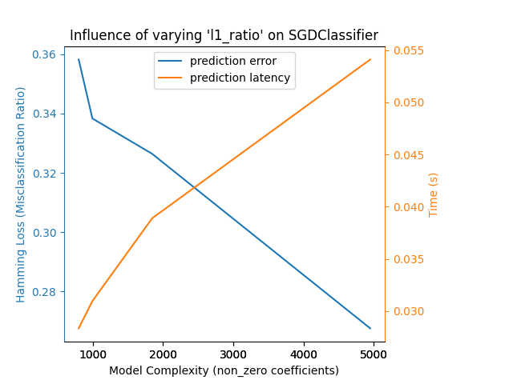
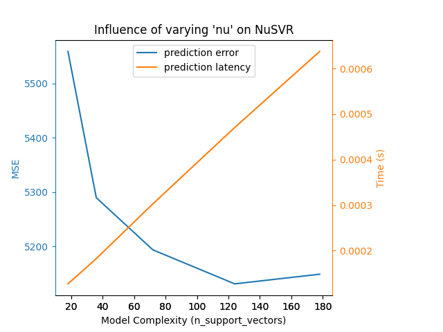
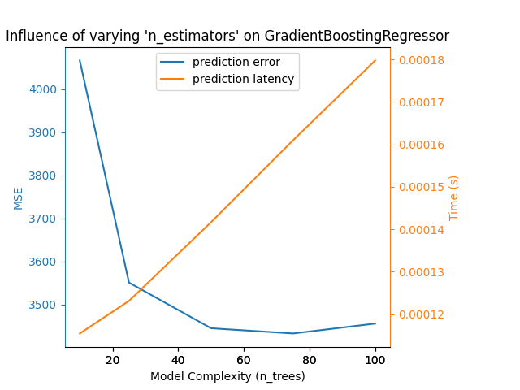

Note
Go to the end to download the full example code or to run this example in your browser via Binder
Model Complexity Influence¶
Demonstrate how model complexity influences both prediction accuracy and computational performance.
- We will be using two datasets:
Diabetes dataset for regression. This dataset consists of 10 measurements taken from diabetes patients. The task is to predict disease progression;
The 20 newsgroups text dataset for classification. This dataset consists of newsgroup posts. The task is to predict on which topic (out of 20 topics) the post is written about.
- We will model the complexity influence on three different estimators:
SGDClassifier(for classification data) which implements stochastic gradient descent learning;NuSVR(for regression data) which implements Nu support vector regression;GradientBoostingRegressorbuilds an additive model in a forward stage-wise fashion. Notice thatHistGradientBoostingRegressoris much faster thanGradientBoostingRegressorstarting with intermediate datasets (n_samples >= 10_000), which is not the case for this example.
We make the model complexity vary through the choice of relevant model parameters in each of our selected models. Next, we will measure the influence on both computational performance (latency) and predictive power (MSE or Hamming Loss).
# Authors: Eustache Diemert <eustache@diemert.fr>
# Maria Telenczuk <https://github.com/maikia>
# Guillaume Lemaitre <g.lemaitre58@gmail.com>
# License: BSD 3 clause
import time
import matplotlib.pyplot as plt
import numpy as np
from sklearn import datasets
from sklearn.ensemble import GradientBoostingRegressor
from sklearn.linear_model import SGDClassifier
from sklearn.metrics import hamming_loss, mean_squared_error
from sklearn.model_selection import train_test_split
from sklearn.svm import NuSVR
# Initialize random generator
np.random.seed(0)
Load the data¶
First we load both datasets.
Note
We are using
fetch_20newsgroups_vectorized to download 20
newsgroups dataset. It returns ready-to-use features.
Note
X of the 20 newsgroups dataset is a sparse matrix while X
of diabetes dataset is a numpy array.
def generate_data(case):
"""Generate regression/classification data."""
if case == "regression":
X, y = datasets.load_diabetes(return_X_y=True)
train_size = 0.8
elif case == "classification":
X, y = datasets.fetch_20newsgroups_vectorized(subset="all", return_X_y=True)
train_size = 0.4 # to make the example run faster
X_train, X_test, y_train, y_test = train_test_split(
X, y, train_size=train_size, random_state=0
)
data = {"X_train": X_train, "X_test": X_test, "y_train": y_train, "y_test": y_test}
return data
regression_data = generate_data("regression")
classification_data = generate_data("classification")
Benchmark influence¶
Next, we can calculate the influence of the parameters on the given
estimator. In each round, we will set the estimator with the new value of
changing_param and we will be collecting the prediction times, prediction
performance and complexities to see how those changes affect the estimator.
We will calculate the complexity using complexity_computer passed as a
parameter.
def benchmark_influence(conf):
"""
Benchmark influence of `changing_param` on both MSE and latency.
"""
prediction_times = []
prediction_powers = []
complexities = []
for param_value in conf["changing_param_values"]:
conf["tuned_params"][conf["changing_param"]] = param_value
estimator = conf["estimator"](**conf["tuned_params"])
print("Benchmarking %s" % estimator)
estimator.fit(conf["data"]["X_train"], conf["data"]["y_train"])
conf["postfit_hook"](estimator)
complexity = conf["complexity_computer"](estimator)
complexities.append(complexity)
start_time = time.time()
for _ in range(conf["n_samples"]):
y_pred = estimator.predict(conf["data"]["X_test"])
elapsed_time = (time.time() - start_time) / float(conf["n_samples"])
prediction_times.append(elapsed_time)
pred_score = conf["prediction_performance_computer"](
conf["data"]["y_test"], y_pred
)
prediction_powers.append(pred_score)
print(
"Complexity: %d | %s: %.4f | Pred. Time: %fs\n"
% (
complexity,
conf["prediction_performance_label"],
pred_score,
elapsed_time,
)
)
return prediction_powers, prediction_times, complexities
Choose parameters¶
We choose the parameters for each of our estimators by making
a dictionary with all the necessary values.
changing_param is the name of the parameter which will vary in each
estimator.
Complexity will be defined by the complexity_label and calculated using
complexity_computer.
Also note that depending on the estimator type we are passing
different data.
def _count_nonzero_coefficients(estimator):
a = estimator.coef_.toarray()
return np.count_nonzero(a)
configurations = [
{
"estimator": SGDClassifier,
"tuned_params": {
"penalty": "elasticnet",
"alpha": 0.001,
"loss": "modified_huber",
"fit_intercept": True,
"tol": 1e-1,
"n_iter_no_change": 2,
},
"changing_param": "l1_ratio",
"changing_param_values": [0.25, 0.5, 0.75, 0.9],
"complexity_label": "non_zero coefficients",
"complexity_computer": _count_nonzero_coefficients,
"prediction_performance_computer": hamming_loss,
"prediction_performance_label": "Hamming Loss (Misclassification Ratio)",
"postfit_hook": lambda x: x.sparsify(),
"data": classification_data,
"n_samples": 5,
},
{
"estimator": NuSVR,
"tuned_params": {"C": 1e3, "gamma": 2**-15},
"changing_param": "nu",
"changing_param_values": [0.05, 0.1, 0.2, 0.35, 0.5],
"complexity_label": "n_support_vectors",
"complexity_computer": lambda x: len(x.support_vectors_),
"data": regression_data,
"postfit_hook": lambda x: x,
"prediction_performance_computer": mean_squared_error,
"prediction_performance_label": "MSE",
"n_samples": 15,
},
{
"estimator": GradientBoostingRegressor,
"tuned_params": {
"loss": "squared_error",
"learning_rate": 0.05,
"max_depth": 2,
},
"changing_param": "n_estimators",
"changing_param_values": [10, 25, 50, 75, 100],
"complexity_label": "n_trees",
"complexity_computer": lambda x: x.n_estimators,
"data": regression_data,
"postfit_hook": lambda x: x,
"prediction_performance_computer": mean_squared_error,
"prediction_performance_label": "MSE",
"n_samples": 15,
},
]
Run the code and plot the results¶
We defined all the functions required to run our benchmark. Now, we will loop
over the different configurations that we defined previously. Subsequently,
we can analyze the plots obtained from the benchmark:
Relaxing the L1 penalty in the SGD classifier reduces the prediction error
but leads to an increase in the training time.
We can draw a similar analysis regarding the training time which increases
with the number of support vectors with a Nu-SVR. However, we observed that
there is an optimal number of support vectors which reduces the prediction
error. Indeed, too few support vectors lead to an under-fitted model while
too many support vectors lead to an over-fitted model.
The exact same conclusion can be drawn for the gradient-boosting model. The
only the difference with the Nu-SVR is that having too many trees in the
ensemble is not as detrimental.
def plot_influence(conf, mse_values, prediction_times, complexities):
"""
Plot influence of model complexity on both accuracy and latency.
"""
fig = plt.figure()
fig.subplots_adjust(right=0.75)
# first axes (prediction error)
ax1 = fig.add_subplot(111)
line1 = ax1.plot(complexities, mse_values, c="tab:blue", ls="-")[0]
ax1.set_xlabel("Model Complexity (%s)" % conf["complexity_label"])
y1_label = conf["prediction_performance_label"]
ax1.set_ylabel(y1_label)
ax1.spines["left"].set_color(line1.get_color())
ax1.yaxis.label.set_color(line1.get_color())
ax1.tick_params(axis="y", colors=line1.get_color())
# second axes (latency)
ax2 = fig.add_subplot(111, sharex=ax1, frameon=False)
line2 = ax2.plot(complexities, prediction_times, c="tab:orange", ls="-")[0]
ax2.yaxis.tick_right()
ax2.yaxis.set_label_position("right")
y2_label = "Time (s)"
ax2.set_ylabel(y2_label)
ax1.spines["right"].set_color(line2.get_color())
ax2.yaxis.label.set_color(line2.get_color())
ax2.tick_params(axis="y", colors=line2.get_color())
plt.legend(
(line1, line2), ("prediction error", "prediction latency"), loc="upper center"
)
plt.title(
"Influence of varying '%s' on %s"
% (conf["changing_param"], conf["estimator"].__name__)
)
for conf in configurations:
prediction_performances, prediction_times, complexities = benchmark_influence(conf)
plot_influence(conf, prediction_performances, prediction_times, complexities)
plt.show()
- 
- 
- 
Benchmarking SGDClassifier(alpha=0.001, l1_ratio=0.25, loss='modified_huber',
n_iter_no_change=2, penalty='elasticnet', tol=0.1)
Complexity: 4948 | Hamming Loss (Misclassification Ratio): 0.2675 | Pred. Time: 0.054108s
Benchmarking SGDClassifier(alpha=0.001, l1_ratio=0.5, loss='modified_huber',
n_iter_no_change=2, penalty='elasticnet', tol=0.1)
Complexity: 1847 | Hamming Loss (Misclassification Ratio): 0.3264 | Pred. Time: 0.038893s
Benchmarking SGDClassifier(alpha=0.001, l1_ratio=0.75, loss='modified_huber',
n_iter_no_change=2, penalty='elasticnet', tol=0.1)
Complexity: 997 | Hamming Loss (Misclassification Ratio): 0.3383 | Pred. Time: 0.030957s
Benchmarking SGDClassifier(alpha=0.001, l1_ratio=0.9, loss='modified_huber',
n_iter_no_change=2, penalty='elasticnet', tol=0.1)
Complexity: 802 | Hamming Loss (Misclassification Ratio): 0.3582 | Pred. Time: 0.028343s
Benchmarking NuSVR(C=1000.0, gamma=3.0517578125e-05, nu=0.05)
Complexity: 18 | MSE: 5558.7313 | Pred. Time: 0.000127s
Benchmarking NuSVR(C=1000.0, gamma=3.0517578125e-05, nu=0.1)
Complexity: 36 | MSE: 5289.8022 | Pred. Time: 0.000182s
Benchmarking NuSVR(C=1000.0, gamma=3.0517578125e-05, nu=0.2)
Complexity: 72 | MSE: 5193.8353 | Pred. Time: 0.000303s
Benchmarking NuSVR(C=1000.0, gamma=3.0517578125e-05, nu=0.35)
Complexity: 124 | MSE: 5131.3279 | Pred. Time: 0.000471s
Benchmarking NuSVR(C=1000.0, gamma=3.0517578125e-05)
Complexity: 178 | MSE: 5149.0779 | Pred. Time: 0.000638s
Benchmarking GradientBoostingRegressor(learning_rate=0.05, max_depth=2, n_estimators=10)
Complexity: 10 | MSE: 4066.4812 | Pred. Time: 0.000115s
Benchmarking GradientBoostingRegressor(learning_rate=0.05, max_depth=2, n_estimators=25)
Complexity: 25 | MSE: 3551.1723 | Pred. Time: 0.000123s
Benchmarking GradientBoostingRegressor(learning_rate=0.05, max_depth=2, n_estimators=50)
Complexity: 50 | MSE: 3445.2171 | Pred. Time: 0.000142s
Benchmarking GradientBoostingRegressor(learning_rate=0.05, max_depth=2, n_estimators=75)
Complexity: 75 | MSE: 3433.0358 | Pred. Time: 0.000161s
Benchmarking GradientBoostingRegressor(learning_rate=0.05, max_depth=2)
Complexity: 100 | MSE: 3456.0602 | Pred. Time: 0.000180s
Conclusion¶
As a conclusion, we can deduce the following insights:
a model which is more complex (or expressive) will require a larger training time;
a more complex model does not guarantee to reduce the prediction error.
These aspects are related to model generalization and avoiding model under-fitting or over-fitting.
Total running time of the script: (0 minutes 12.435 seconds)